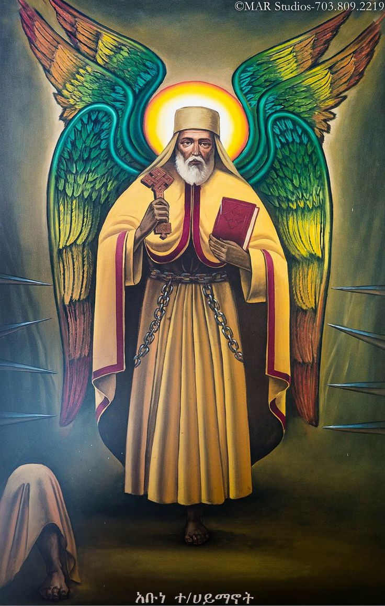

Saint Teklehaimanot
Abune Teklehaimanot was a preacher, teacher, confessor, and founder of Debre Libanos Monastery, remembered for his devotion and missionary work.
According to the Ethiopian calendar tradition presented in our original parish material, Saint Teklehaimanot lived during the medieval period and became one of Ethiopia's most revered saints. His name is associated with steadfast faith and service to God.
Life and ministry
Saint Teklehaimanot traveled widely to strengthen Christian communities and is traditionally remembered for preaching, teaching, prayer, and ascetic devotion. He also served at Debre Damo and is closely associated with Debre Libanos.
Church tradition preserves many accounts of his miracles and spiritual discipline. In the later years of his life, he devoted himself intensely to prayer and contemplation, becoming an enduring example of perseverance in faith.
“Those who hope in the LORD will renew their strength. They will soar on wings like eagles.” — Isaiah 40:31
Read more about Saint Teklehaimanot